The ideal state: safety reporting for a restaurant network
The research said what the reporting service should do. This is what it would look like if someone built it. Ten modules, one design system, and a numbered note on every screen saying which finding drove the decision and which alternative it rejected.
- What this is
- A concept, designed in September 2026 from the December 2025 research. Not a shipped product and not the platform the restaurants use.
- Evidence behind it
- 13 interviews, 55 survey responses, 8 restaurants, 2 form walkthroughs, and 232 typed insight records tied to a five-stage blueprint.
- How it was built
- Hand-written HTML and CSS on a token-based design system, screenshot at twice scale. Every component was checked against shipped products on Mobbin before it was drawn.
- Anonymisation
- Organisation, vendor, sites and people removed. Every name, number and record on these screens is invented for the concept.
What you are looking at, and why it exists
The problem. A safety incident and hazard reporting platform, configured for one workflow across several hundred restaurants: a team member notices something, scans the poster, fills in the form. The research found a different workflow in almost every restaurant. The team member tells the manager. The manager decides whether it is worth logging, logs it if so, and sometimes closes it without telling anyone. Reporting volume varied widely between sites and the platform's own data could not say whether a quiet restaurant was safe or silent.
What the research changed. The business assumed location explained the difference, so the sample was designed to test that: eight restaurants across high- and low-reporting sites, higher- and lower-crime suburbs, metropolitan and regional. Location did not predict it. The manager did. That finding reorganised the recommendations, and it organises these screens.
Why a concept and not a redesign. The platform was a configured vendor product that could not be rebuilt, so the delivered recommendations were about what the form asks and what managers do. This concept answers the next question an employer asks, which is what the service would look like if the software followed the evidence. Each module below is one item from that product's navigation, redrawn from the findings.
How to read a module. The finding sits above the screen. The screen is shown whole, at its native size, with numbered markers. Each marker names the finding, the decision it drove, the alternative rejected and the shipped product the pattern was checked against. The states that matter sit underneath. [The case study](../index.html) carries the research, the method and the estimate of what the internal tool saved.
Quick Add: reporting from the floor
The form asked questions the reporter could not answer. Incident type came first, with options like first aid or lost time that nobody can predict while their hand is under the cold tap; the notifiable-to-the-regulator question sent people to a compliance matrix. Even area safety leads admitted asking the restaurant's safety champion which option to choose. Misclassified reports were sent back from above, and everyone learned that reporting was a way to get something wrong.
The redesign inverts the order. The reporter says what happened and how it happened, in the words they would use to a manager. Severity, classification and the regulator question move to the manager's review, after the welfare check, when the outcome is actually known. The safety team supported the inversion because it also gives them cleaner data.
Everything on the reporter's side is built for one thumb, mid-shift, on a personal phone, in a restaurant whose phone policy may not allow it. Nothing is asked that the system already knows.
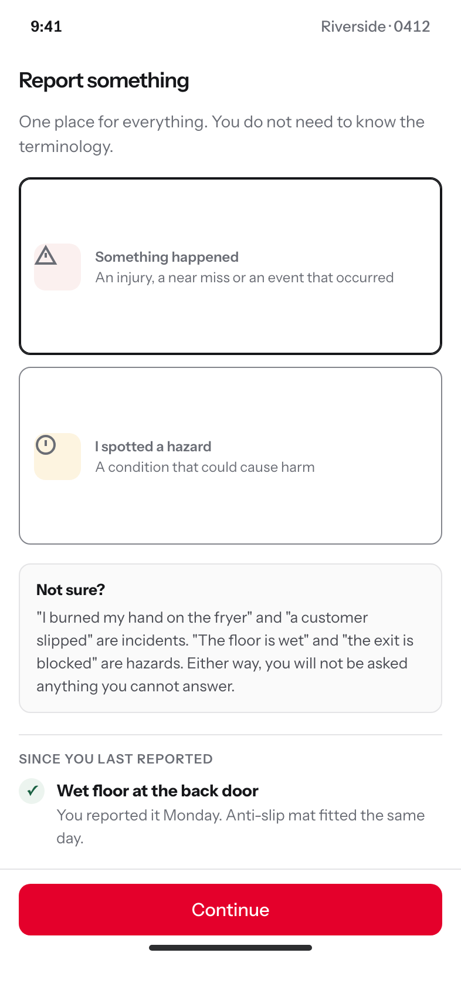
123456Figure 1The entry screen. One question, two answers, and the examples that resolve the only hesitation the research found. The old form opened on a dropdown of incident types.
The restaurant is already known
FindingThe research watched reports being made during a shift. Time pressure was real but smaller than it felt: the cost people described was stepping off the floor during a rush.
DecisionThe restaurant and its number are carried by the session, so the first screen asks nothing the system can already answer.
RejectedA site picker on the first screen, which asks a casual team member for a number they have never needed to know.
Checked against Apple Maps, report an incident
Something happened, in plain words
FindingIncident type came first on the old form, with options like first aid or lost time that nobody can predict while their hand is under the cold tap.
DecisionTwo choices, written as sentences a team member would say out loud, with the definition underneath. The industrial vocabulary never appears on the reporter's side.
RejectedA dropdown of incident types, which was the field people got wrong and were corrected on from above.
Checked against Clubhouse, report an issue
A hazard is a condition, not an event
FindingThe platform's hazard categories contained events rather than conditions, so a wet floor and a fall landed in the same list and the reporter had to guess which one they were looking at.
DecisionThe hazard path is a separate entry that describes a condition that could cause harm, and it skips every question about an injury.
RejectedOne combined form with conditional fields, which still opens on the question the reporter cannot answer.
Checked against Google Maps, adding a report
The guide sits where the hesitation is
FindingTeam members trusted their managers and nobody described feeling afraid to report. The barrier was the form, the phone and the threshold: not knowing whether a thing counted.
DecisionWorked examples in the reporter's own language sit on the deciding screen, and the promise that follows them is the one the rest of the flow keeps: you will not be asked anything you cannot answer.
RejectedA help link to a policy page, which moves the person away from the task at the moment they were already unsure.
Checked against Intercom, help centre
The loop, closed on the reporter's own screen
FindingReporters rarely heard what happened next. Minor reports were closed without a word, and over time that built the belief that reporting helps you with a claim but does nothing for anyone else.
DecisionThe entry screen carries the outcome of this person's last report, so the thing they see before reporting again is that the last one changed something. It is the same promise the submitted screen makes, kept where it can be checked.
RejectedA notification at the moment the action is closed, which arrives when the person is off shift and is gone by the time they next open the app.
Checked against Hers, home with the status of your last request
One thumb, one action
FindingRestaurant visits found phone policies that differed by site and reports being made standing up, mid-shift, on a personal phone.
DecisionA single full-width action pinned to the bottom of every step, at a size that works with one thumb and wet hands.
RejectedNext and Cancel side by side, which puts the destructive action under the thumb that is already moving.
Checked against Clubhouse, report an issue
The flow, step by step
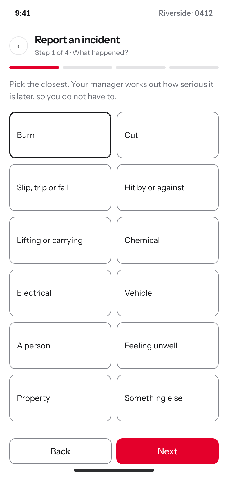
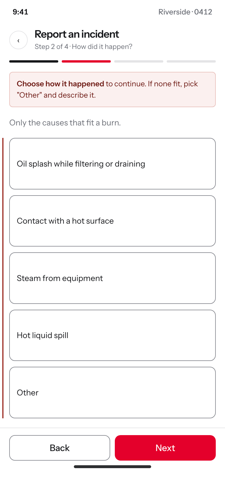
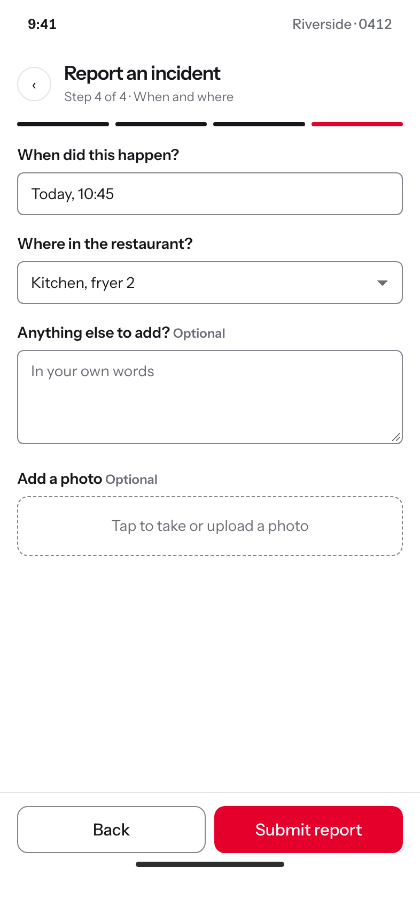
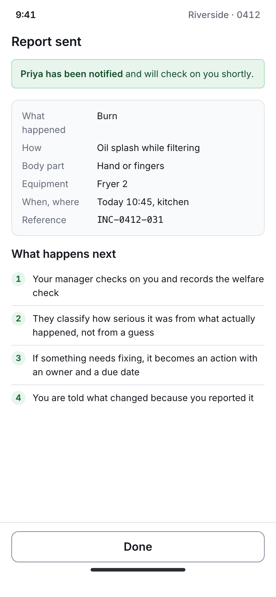
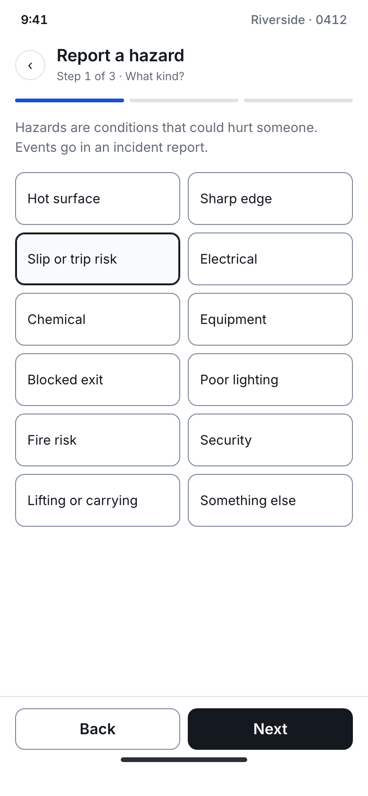
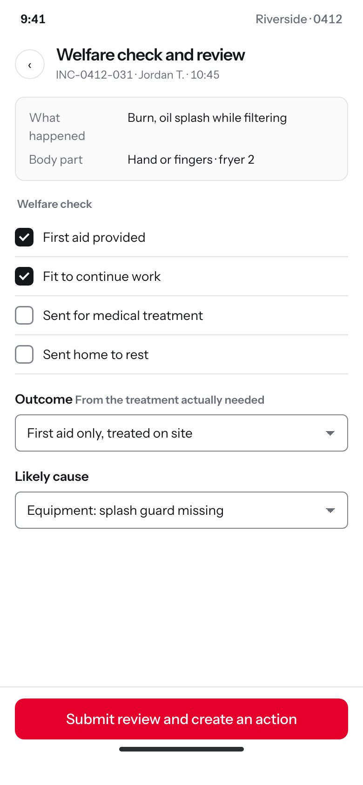
Dashboard: the restaurant manager's shift
Location did not predict safety culture. The manager did. Where a manager talked about safety, thanked people for reports and showed the system on the first shift, reporting was strong regardless of where the restaurant was. That finding made the manager's screen the most important screen in the product.
So this dashboard is not a reporting console. It is a shift tool: what needs a person today, what is overdue, what was fixed and who reported it, and the routine that the research found to be the strongest lever. The vendor product opened on a permissions wall where the dashboard should have been.
The two charts answer the question the safety team could not answer from the platform's data: whether a quiet restaurant is a safe one. Hazards and incidents are plotted separately, because a restaurant finding hazards before they hurt anyone looks nothing like one that reports only after an injury.
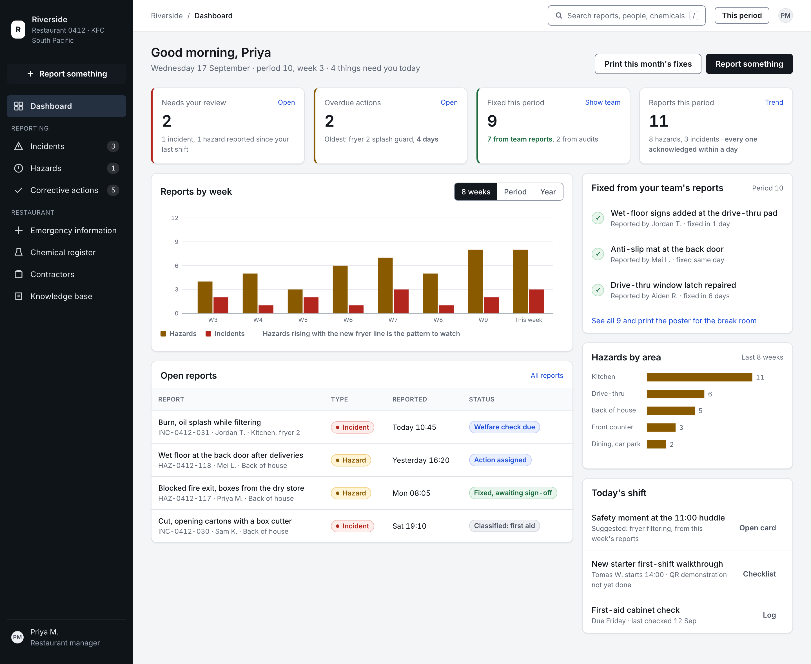
12345678Figure 2The restaurant manager's dashboard at 1440 by 900. Four counts, a weekly trend read in a sentence, the open reports with the next human act as their status, and the loop closed on the right.
One way in, and it is a verb
FindingThe platform assumed a team member would scan a poster and fill in the form. In practice they told the manager, who logged it or did not, so the manager is the heaviest user of the system.
DecisionThe manager's primary action is the same action the team member gets on a phone: Report something. It sits above the navigation, not inside a module, so logging on someone's behalf is one click from anywhere.
RejectedA New incident button inside the Incidents module, which makes the reporter choose the record type before they have described anything.
Checked against Vanta, action tracker
Sorted by what needs a person, not by record type
FindingReports sat waiting because nothing told the manager which ones needed them today; the platform's lists were organised by the record's type rather than by whether anyone was waiting.
DecisionThe first tile is Needs your review, counted across incidents and hazards together, with the reason written underneath in words a manager reads once.
RejectedA tile per module (incidents, hazards, actions) which reports the shape of the database rather than the shape of the shift.
Checked against Airtable, projects dashboard
Fixes are counted, and so is where they came from
FindingMinor reports were closed without a word, and over time people came to believe that reporting helps with a claim but changes nothing. The restaurant where a fault was fixed the same day had a story people kept telling.
DecisionFixed this period is a headline number, split to show how many came from the team's own reports. It is the number the manager repeats at the huddle.
RejectedCounting reports received, which rewards volume. The safety team's view was that an incentive on hazard reports gets you reports, not fewer hazards.
Checked against Airtable, projects dashboard
Two series, because the ratio is the signal
FindingReporting volume varied widely between restaurants, and low volume could mean a safe restaurant or a silent one. The platform's data could not tell the difference.
DecisionHazards and incidents are plotted side by side every week. A restaurant finding hazards before they hurt anyone looks different from one that reports only after an injury, and the reading is written under the chart in a sentence.
RejectedA single total-reports line, which is the number that could not distinguish a safe restaurant from a silent one.
Checked against Airtable, projects dashboard
The status is the next human act
FindingThe form asked for incident type and severity first, with options like first aid or lost time that nobody can pick while their hand is under the cold tap, and classification errors were sent back from above.
DecisionA report's status names what a person does next: welfare check due, action assigned, fixed and awaiting sign-off. Classification is an outcome the manager records later, so it never blocks the report.
RejectedStatus as a workflow code (open, triaged, pending classification), which describes the database's state rather than anyone's obligation.
Checked against incident.io, incident list
The loop, closed on the manager's screen
FindingReporters rarely heard what happened after they reported, and minor reports were closed silently.
DecisionA standing panel names each fix, who reported it and how long it took, with one action that prints the notice for the break room. Telling people is a default, not a task someone remembers.
RejectedA monthly email to the reporter, which depends on a mailbox most team members do not read on shift.
Checked against Vanta, action tracker
Hazards located, because the blueprint located them
FindingEvery observation in the research was tied to a stage of the incident journey and to the role it concerned, which is what let the findings point at exact places in the service rather than at themes.
DecisionHazards are counted by area of the restaurant, so the pattern points at the fryer line or the back door rather than at a category name.
RejectedA hazard-type breakdown, which sorts by the taxonomy the reporter was never able to apply.
Checked against Airtable, projects dashboard
The routine is part of the product
FindingWhere a manager talked about safety, thanked people for reports and showed the system on the first shift, reporting was strong regardless of where the restaurant was. Induction varied from a full demonstration to nothing.
DecisionToday's shift carries the routine the research found to be the strongest lever: a safety moment drawn from this week's reports, the new starter's first-shift walkthrough, the first-aid cabinet check.
RejectedLeaving the routine to a separate training system, which is where it lived when nobody could tell whether a new starter had been shown the system.
Checked against Jobber, home workflow strip
Dashboard: the area manager, twelve restaurants
Reporting volume varied widely between restaurants and nobody could say why. Low volume could mean a safe restaurant or a silent one, and the existing lever was a reminder email that went to everyone and told no one anything.
The area view compares restaurants on the ratio of hazards to incidents rather than on report counts, and it names the three conversations worth having this week instead of sending twelve people the same message.
This is the screen where the study's central finding becomes an operating instrument: if the manager is the variable, the area manager's job is to find the managers who need a conversation, and to have it on evidence.
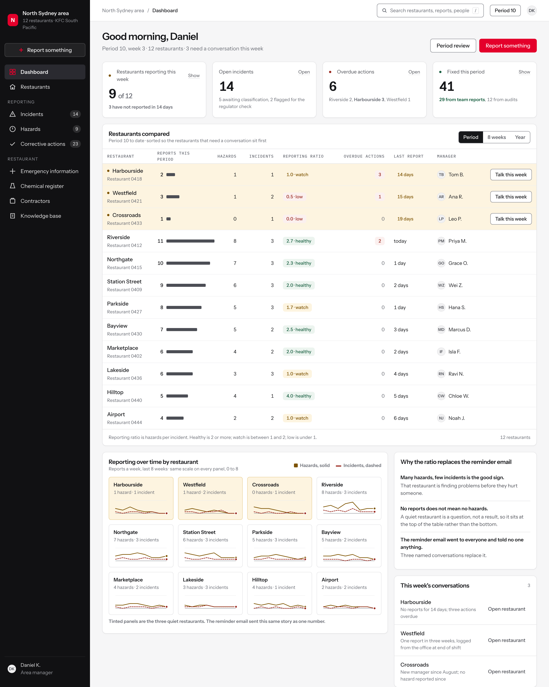
12345678Figure 3The area manager's dashboard. Twelve restaurants compared, three flagged, and the reasoning written next to the table rather than left to the reader.
Restaurants reporting, not reports filed
FindingAn area safety lead received an automated reminder email listing how many incident and hazard reports each restaurant had made, period to date and year to date, and used it to follow up.
DecisionThe first tile counts restaurants that reported, not reports received, and names how many have been silent for a fortnight. The number an area manager acts on is how many teams have gone quiet.
RejectedA total report count for the area, which rises when one busy restaurant reports a lot and hides eleven others.
Checked against Airtable, projects dashboard
Overdue actions named by restaurant
FindingReviewing weekly, an area safety lead found many incidents in their area sitting overdue, and a backlog creates pressure to close reports quickly without the proper steps.
DecisionThe overdue tile breaks the number down by restaurant on the tile itself, so the follow-up is a named conversation rather than a queue to clear.
RejectedA single overdue count linking to a mixed list, which invites bulk closing rather than a conversation with the three managers who own the work.
Checked against Airtable, projects dashboard
The quiet restaurants sort to the top
FindingZero reports in a period was already treated as a signal to check in, not as good news.
DecisionThe table opens sorted so the three restaurants that have gone quiet sit first, tinted, with a dot on the name. The rule the area safety lead already applied is built into the default view.
RejectedSorting by report volume, which puts the restaurants that need attention at the bottom of a twelve-row table.
Checked against Navan, COVID-19 status by state
Hazards per incident as the leading indicator
FindingSome restaurant groups run competitions and recognition for reporters and report more. The research cautioned that rewarding counts encourages low-value reports, and suggested recognising outcomes instead.
DecisionThe ratio of hazards to incidents is the headline measure, tinted healthy, watch or low. Many hazards and few incidents means a team finding problems before they hurt someone, which volume alone cannot show.
RejectedA leaderboard of top reporters, which rewards volume over value and was flagged in the research as a risk.
Checked against Navan, COVID-19 status by state
Days since the last report, not a tick
FindingBecause reports arrive verbally, the manager decides what is worth logging, checks the story and enters it. Reporting is strong where the manager has built the routine and weak where they have not.
DecisionTime since the last report is shown as a badge that ages, so a manager routine that has lapsed shows up within a fortnight rather than at the period review.
RejectedA compliant or non-compliant flag, which cannot distinguish a restaurant that reported yesterday from one that reported six days ago.
Checked against PlanetScale, query insights
The row ends in a conversation
FindingLocation did not predict safety culture. The manager did. Where a manager had built a reporting culture, reporting was strong regardless of the suburb, which moved the recommendations towards manager routines.
DecisionOnly the flagged rows carry an action, and the action is Talk this week, addressed to the named manager. The finding that the manager is the variable is what the row asks the area manager to act on.
RejectedA Send reminder button on every row, which is the email the research found told no one anything.
Checked against Navan, COVID-19 status by state
One panel per restaurant, one shared scale
FindingThe reminder email listed period-to-date counts per restaurant. Counts alone could not say whether a low number meant a safe restaurant or a silent one.
DecisionTwelve panels on the same zero-to-eight scale show the shape of reporting over eight weeks. A line that fades to the axis reads as a routine that stopped, which a single period count cannot show.
RejectedOne combined chart with twelve series, which becomes unreadable and hides the restaurants that flatten out.
Checked against Xero, business snapshot
The measure explains itself on the screen
FindingTeam members and managers had no shared definition of a reportable incident, and nobody had told them where the threshold sat.
DecisionThe card next to the data says in three lines why many hazards is a good sign, why silence is a question rather than a result, and what the ratio replaces. A new area manager can read the measure without training.
RejectedA tooltip or a definitions page, which puts the reasoning somewhere nobody opens during a weekly review.
Checked against Xero, business snapshot
The state that matters
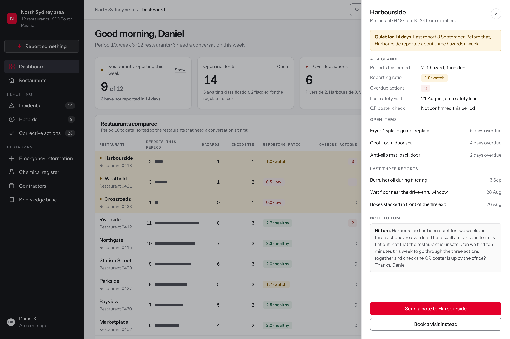
Incidents and hazards: one register, two types
The platform's hazard categories contained events rather than conditions, so the two record types blurred at the point of entry and then had to be kept apart everywhere else. Reports also sat waiting because nothing said which ones needed a person today.
Incidents and hazards live in one register with one filter, because a manager's question is about their restaurant this week, not about a record type. The type is a column, not a navigation decision.
Status is written as the next human act. Welfare check due, action assigned, fixed and awaiting sign-off: each one names something a person does, so a list of statuses reads as a list of obligations.
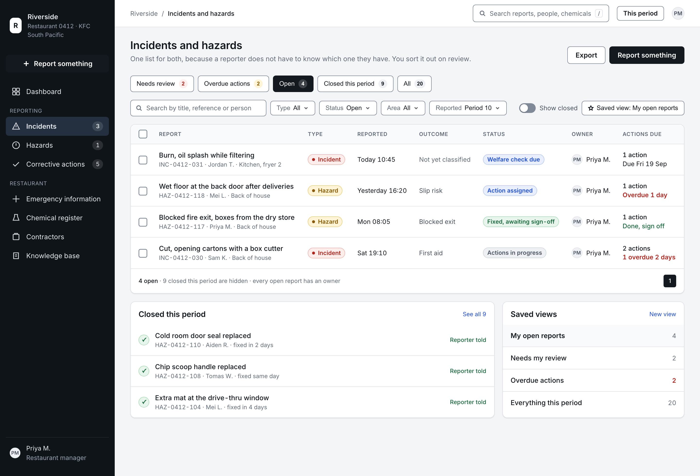
12345678Figure 4The register with the quick filters that match the manager's questions, and the type as a column rather than a menu.
One list, not two
FindingThe form asked for the incident type first, with options such as first aid or lost time that nobody can predict while their hand is under the cold tap, and hazard categories that contained events rather than conditions.
DecisionIncidents and hazards share one register. Type is a badge the manager can change on review, so nobody has to pick the right list before they can report.
RejectedSeparate Incidents and Hazards registers, which pushes the classification back onto whoever is reporting.
Checked against incident.io, Incidents list
The queue opens on what needs a person
FindingMisclassified reports were sent back from above, and people learned that reporting was a way to get something wrong. The manager decided what was worth logging.
DecisionThe first quick filter is Needs review, and each filter carries its own count, so the manager sees the work waiting on them before anything else.
RejectedA severity-ranked default sort, which puts the classification decision back at the top of the page.
Checked against incident.io, Incidents list
The row names the person
FindingPeople reported to a person, not a platform. Team members described telling the manager first, almost without exception.
DecisionEvery row carries the reference, the reporter and the area under the title, so the list reads as things that happened to people on a shift.
RejectedA reference-first row, which reads as a ticket queue and loses who it came from.
Checked against incident.io, Incidents list
Unclassified is a normal state
FindingIncident type came first on the old form, and the notifiable-to-the-regulator question sent people to a compliance matrix that even area safety leads asked for help with.
DecisionThe outcome column says Not yet classified until the manager sets it after the welfare check. An unclassified report is a stage, not an error.
RejectedDefaulting new reports to the lowest severity, which makes them disappear from the work that needs attention.
Checked against incident.io, Incidents list
Status is the next action
FindingReporters rarely heard what happened next, and minor reports were closed without a word.
DecisionStatus names what happens next and who owes it: welfare check due, action assigned, fixed awaiting sign-off. The list is a set of obligations, not a set of states.
RejectedOpen and Closed only, which hides the step the report is actually waiting on.
Checked against incident.io, Incidents list
The fix travels with the report
FindingMinor reports were closed silently, and the reporting data could not show whether anything changed as a result of a report.
DecisionThe last column carries the corrective action and its due date, and marks it overdue in the list, so a report and its fix cannot drift apart.
RejectedAn updated-at timestamp, which tells the manager that something happened but not what is owed.
Checked against Vanta, action tracker
Telling the reporter is visible work
FindingReporters rarely heard what changed. The exception proved the point: the restaurant where a faulty piece of equipment was fixed the same day had a story people kept telling.
DecisionClosed reports stay on the page with a Reporter told mark against each one, so closing the loop is work that can be seen and counted.
RejectedArchiving closed reports out of sight, which is what made the loop invisible in the first place.
Checked against Vanta, action tracker
The manager lands on their own work
FindingManagers were the gatekeepers of reporting and worked the system on behalf of their team, so the register is read by someone with a restaurant to run.
DecisionNamed saved views with counts, defaulting to My open reports, so the page opens on this manager's queue rather than on everything ever reported.
RejectedA single list sorted by date, which makes every manager build the same filter by hand every shift.
Checked against Klaviyo, Helpdesk all tickets
The states that matter
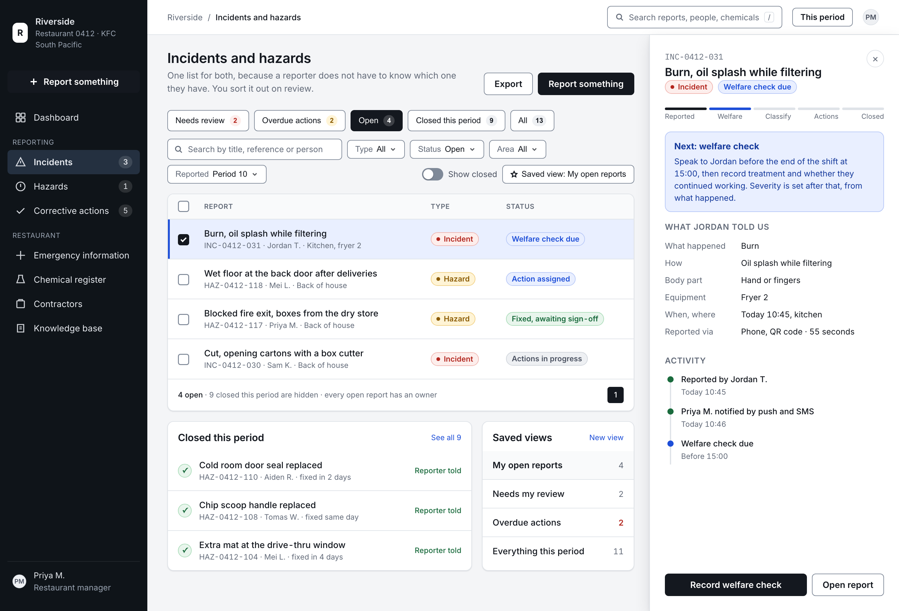
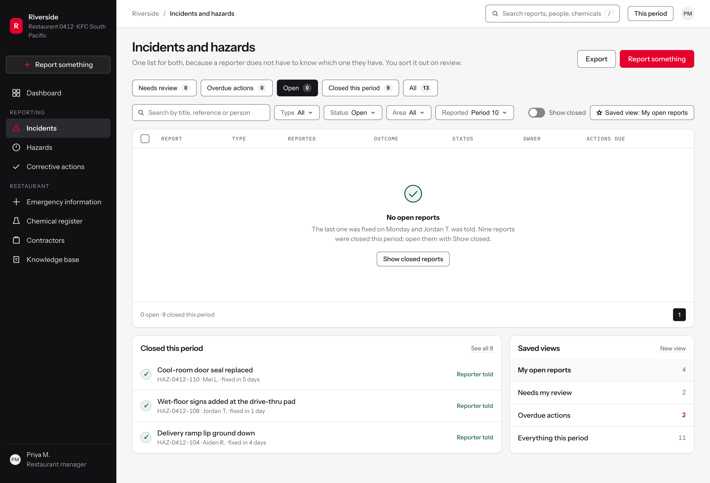
The incident record: welfare first, classification after
The old form asked for the outcome before the event. Severity and the regulatory question sat at the top, answered by a person who could not yet know, and corrected later by someone above them. People learned that reporting was a way to get something wrong.
The record puts the sequence back in the order the shift actually runs. What the reporter told us, then the welfare check, then the classification drawn from what happened, then the cause and the control, then the actions, then the person who reported it being told what changed.
The status pipeline across the top is the argument in one line: the record is not finished when it is logged, it is finished when someone has been told.
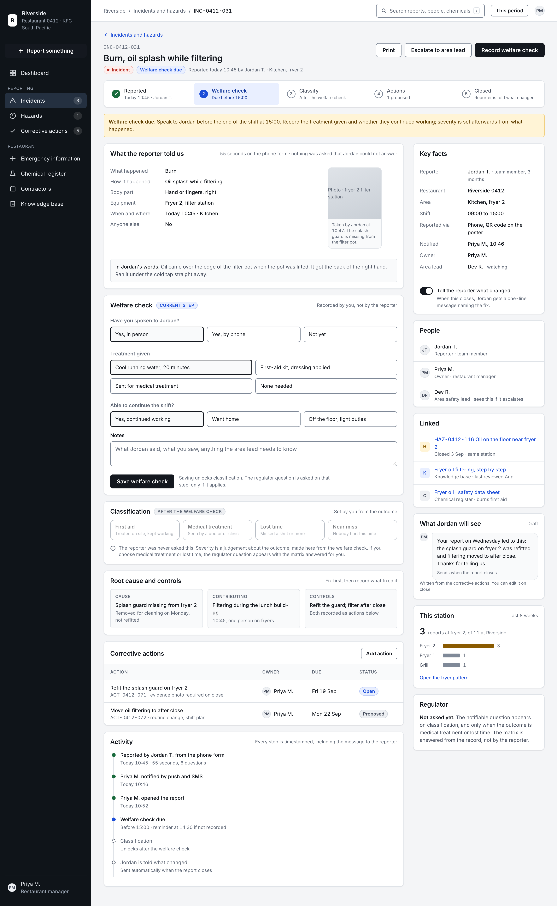
12345678Figure 5The incident record. The welfare check is the current step, and the classification below it is a manager's judgement recorded after the fact, not a reporter's guess recorded before it.
Named stages, in the order the work happens
FindingThe old form asked for the outcome before the event, and classification errors were flagged back from above after the fact.
DecisionThe record runs on five named stages and shows which one is current. Classification stays locked until the welfare check is recorded, so severity is set from what happened rather than from a guess.
RejectedA free status dropdown the manager can set to anything at any time, which is how misclassification happened.
Checked against Employment Hero, reference check lifecycle
Speak to the person first
FindingTeam members told their manager first and trusted them. The barrier to reporting was the form, the phone and the threshold, not fear of the manager.
DecisionThe first thing the record asks of the manager is a welfare check, with a deadline tied to the end of the reporter's shift rather than to a business day.
RejectedOpening the record on the classification form, which treats the report as paperwork before it is treated as a person who got hurt.
Checked against incident.io, incident record
What happened, and how
FindingIncident type came first on the old form, with options such as first aid or lost time that nobody can predict while their hand is under the cold tap.
DecisionThe record opens with the mechanism in the reporter's own terms: what happened, how, body part, equipment, when and where. Every field is something the person could answer at the time.
RejectedKeeping the industrial taxonomy and adding help text and examples to each field. The categories were the problem, not the labelling.
Checked against incident.io, incident record
What the report cost the reporter
FindingManagers said a report takes one to three minutes. The cost people actually felt was stepping off the floor during a rush and needing permission to do it.
DecisionThe record states how long the report took and that nothing was asked which the reporter could not answer, so the cost of reporting is measured on every report rather than argued about.
RejectedDuration metrics as a separate analytics panel, which nobody in a restaurant opens.
Checked against incident.io, incident record
Severity is a judgement about the outcome
FindingThe notifiable-to-the-regulator question sent people to a compliance matrix, and even area safety leads admitted asking the restaurant's safety champion which option to choose.
DecisionClassification sits after the welfare check, is set by the manager from the outcome, and states plainly that the reporter was never asked. The regulator question appears only when the outcome makes it relevant, with the matrix answered from the record.
RejectedAsking the regulator question on the reporter's form, where it produced errors that came back as criticism.
Checked against Employment Hero, reference check lifecycle
The report cannot close without naming the fix
FindingMinor reports were closed without a word, which built the belief that reporting helps you with a claim but does nothing for anyone else.
DecisionCorrective actions are part of the record, each with an owner, a due date and evidence required on close, so closing a report means saying what was done about it.
RejectedA separate actions module with no link back to the report that caused it.
Checked against Jira, work item with linked items
The message back is drafted, not automatic
FindingReporters rarely heard what changed. The safety team's view on incentives was blunt: put an incentive on hazard reports and you get reports, not hazards. Recognising outcomes was the proposal that survived.
DecisionThe message to the reporter is drafted from the corrective actions and shown on the record before it is sent, so the manager can see and edit the sentence that names the fix.
RejectedAn automatic 'your report was closed' notification, which is the silence people already described, with a timestamp on it.
Checked against Pipedrive, record history with activity entries
The pattern at this station, while it still matters
FindingReporting volume varied a lot between restaurants. Low volume could mean a safe restaurant or a silent one, and the platform's data could not tell the difference.
DecisionThe record shows the reports already made at the same station over eight weeks, so a second burn at fryer 2 is visible while the manager is deciding what to do about this one.
RejectedSite-level totals only, which is the number that could not tell a safe restaurant from a silent one.
Checked against Airtable, projects dashboard with inline bars
The state that matters
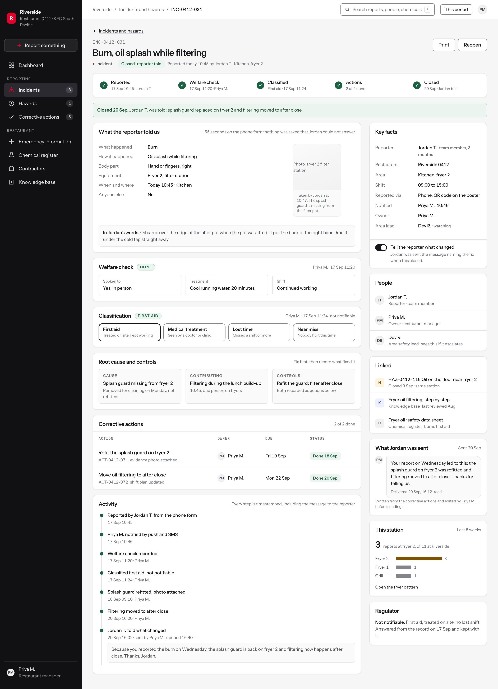
Corrective actions: the half that was invisible
Reporters rarely heard what happened next. Minor reports were closed without a word, which built the belief that reporting helps you with a claim but does nothing for anyone else. The exception proved it: the restaurant where a faulty piece of equipment was fixed the same day had a story people kept telling.
Actions are the part of the service where a report turns into a change, and in the old workflow they were the part nobody outside the office could see. Here they are a board with owners and due dates, and closing one asks for evidence and offers to tell the person who reported it, with the message written for them.
The proposal rejected recognition programmes that reward report counts. The safety team's view was blunt: put an incentive on hazard reports and you get reports, not fewer hazards. So the artefact this module produces is a notice of outcomes, not a leaderboard.
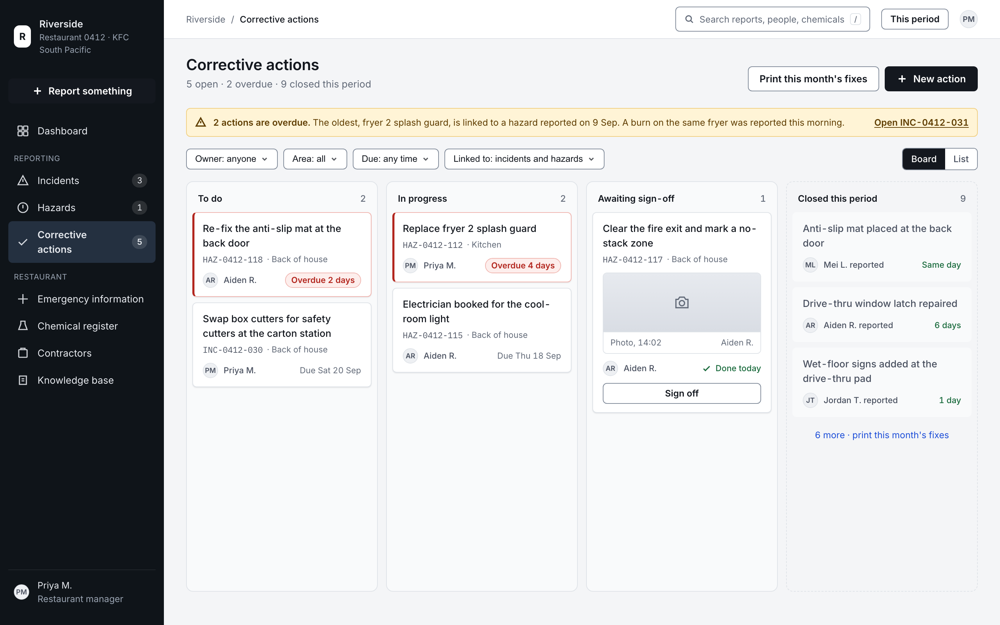
12345678Figure 6The corrective actions board. Overdue is a state of the card, not a report someone runs, and the closed column is the one the monthly notice is printed from.
The overdue notice names the report it came from
FindingThe safety team pointed out that a pile of hazard reports about the same thing, followed by an injury claim, documents poor housekeeping: reporting only helps if the fixes are recorded too.
DecisionThe overdue notice names the hazard the action came from and the new incident on the same fryer, so an ageing action reads as risk rather than as admin.
RejectedA plain count of overdue items with no link to the reports behind them.
Checked against Jira, Board insights
One step from the late action to the incident it now concerns
FindingWhere team members could not report directly, managers noted the basics on paper and entered everything at the end of the shift: double handling, and details got lost.
DecisionThe notice links straight to the new incident, so the manager moves between the two records without re-keying a reference or searching the register.
RejectedMaking the manager find the incident by typing its reference into search.
Checked against Jira, Board insights
Lateness is on the card, in days
FindingWhen incidents pile up the pressure is to close them quickly, which leads to shortcuts and reports closed without the proper steps.
DecisionOverdue actions carry a red edge and the number of days late beside the owner, so lateness is visible during a shift instead of surfacing in a monthly report.
RejectedA separate overdue report, or an email digest that arrives after the fact.
Checked against ClickUp, Board view
Every action carries the report it came from
FindingOnce a team member has told the manager, they have no visibility of what happens next or whether anything was logged.
DecisionEach card shows the reference of the report that produced it, so the system already knows who to tell when the action closes.
RejectedA free-text task list kept apart from the reports, which is what left reporters with nothing to follow.
Checked against Wrike, Creative Team board
A photo taken at the fix, not a memory test at sign-off
FindingA manager described trying to resolve the issue on the spot and logging it afterwards, still recording the update.
DecisionSign-off asks for one photo taken at the time of the fix, so the evidence is captured on the floor and the manager's step is a check rather than a reconstruction.
RejectedA written close-out form with no evidence, which makes a quick close and a real fix look identical.
Checked against Vanta, Action tracker
Closed work stays on the board, quietly
FindingA team member had seen logged hazards changed quickly, and that was why he kept reporting.
DecisionThe closed column stays on the board for the whole period in a quieter, dashed treatment, so fixes remain in sight instead of disappearing the moment they are done.
RejectedHiding completed actions behind a filter, which is where the evidence of follow-through was being lost.
Checked against Linear, Issues board
Days to fix, not a count of reports
FindingThe safety team's view was that putting an incentive behind hazard identification makes everyone report one and the reports will not be real; the research proposed recognising outcomes instead.
DecisionEach closed card shows who reported it and how long the fix took, so the board measures outcomes rather than volume.
RejectedA leaderboard of report counts, which the safety team warned would produce reports rather than fixes.
Checked against ClickUp, Board view
The fixes notice prints from the board
FindingThe research proposed a poster or message each period listing what was fixed because someone reported it.
DecisionThe notice is generated from the actions already closed on this board, so producing it costs a print rather than an evening of writing.
RejectedA separately written monthly communication, which depends on someone having time to write it.
Checked against Vanta, Action tracker
The states that matter
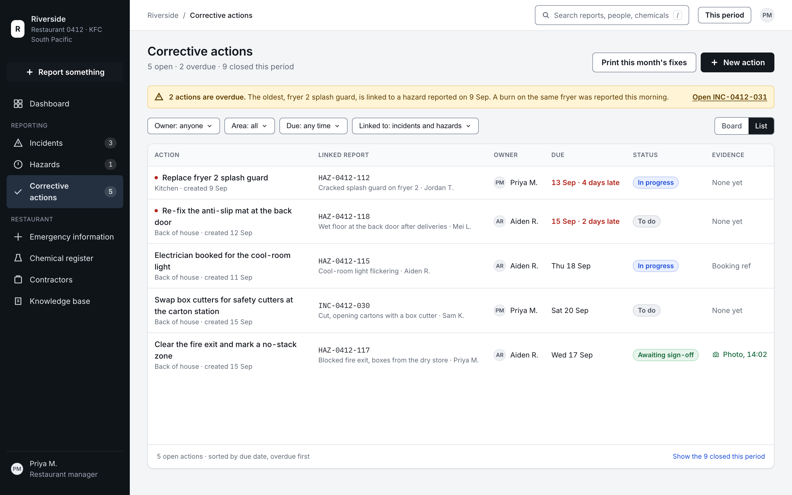
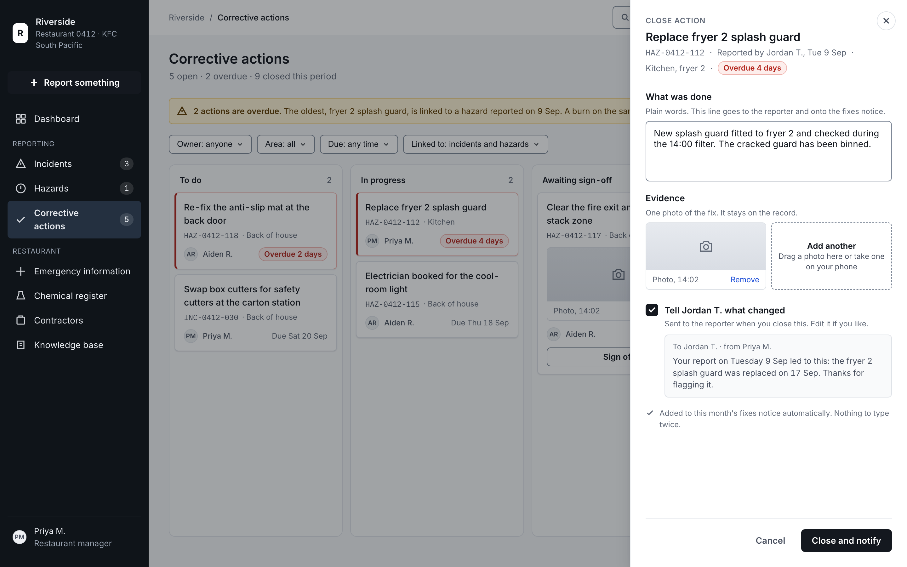
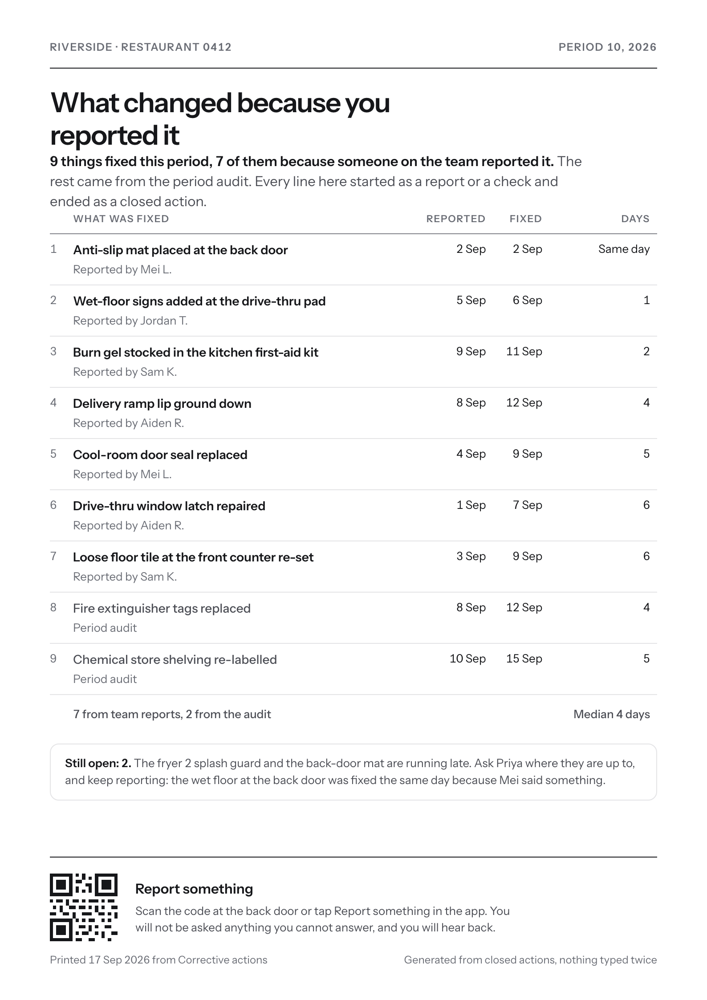
12345The monthly notice, decision by decision
Addressed to the reporter, not to the auditor
Finding18 of the 41 respondents who answered the question, 44 per cent, said they never or rarely learn the outcome of a report, and restaurant visits confirmed that most team members never hear what corrective action followed.
DecisionThe notice speaks to the person who reported, leads with what changed, and is posted where the team already stands.
RejectedA safety scorecard or a percentage-closed figure, which answers the head office question rather than the reporter's.
Checked against Fresha, Sales summary
Every line names who reported it
FindingA team member said minor incidents just get closed off, and only the more important ones are communicated back.
DecisionEach fix names the person who reported it, first name and initial, so the small reports appear beside the large ones and the credit is specific.
RejectedAn anonymous list of completed work, which is indistinguishable from maintenance the team never asked for.
Checked against Fresha, Sales summary
Days to fix is the number on the page
FindingA team member had seen logged hazards changed quickly, and that was why he kept reporting.
DecisionReported, fixed and days-to-fix are the only figures, with the median beneath them, so speed of response is what the notice reports.
RejectedA count of reports received, which measures the team rather than the response to them.
Checked against Xero, Balance sheet layout
It says what is still late, and who to ask
FindingOnce a team member has told the manager, they have no visibility of what happens next or whether anything was logged.
DecisionThe notice names the two actions still open and who to ask about them, so it works as a status the team can check rather than a selective good-news poster.
RejectedPublishing only completed work, which would make the notice unreliable the first time somebody noticed an omission.
Checked against Docusign, Envelope status report
Generated from the closed actions, typed once
FindingWhere reporting ran through the manager, the basics went onto paper and were entered at the end of the shift: double handling, and details got lost.
DecisionThe notice is generated from the actions closed this period, using the words the manager already wrote at sign-off, so nothing is written twice.
RejectedA manually written monthly poster, which is the first thing dropped in a busy period.
Checked against Xero, Balance sheet layout
Emergency information: the screen nobody reads until they must
Emergency information was not the study's focus. The restaurant visits did look at the posters, the first-aid cabinet and the office setup, and the finding that carries over is the one about language: the people who need this are new, busy and do not know the terminology.
So the module is a picture of the restaurant rather than a list of records: where the extinguisher, the blanket, the eyewash and the spill kit actually are, with a legend in plain words and a date beside each check.
The right-hand column is the part used under pressure. Numbers big enough to read at arm's length, in the order you would need them, with the first-aider roster showing its own gap rather than hiding it.
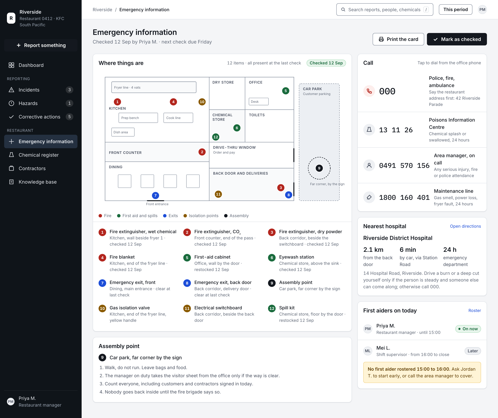
1234567Figure 7Emergency information for one restaurant. The floor sketch is the record; the list beneath it is how the record gets checked.
The check is the primary action, and its date sits on the page Design decision
DecisionThe restaurant visits in this study looked at the physical setup as well as the software: the posters, the first-aid cabinet, the office. Those things drift, and a page about them is only as good as its last look. So the page states who checked it and when, names the next check as a day rather than a date range, and makes Mark as checked the primary button. The record of the check lives on the thing being checked.
RejectedA separate compliance checklist in another module. It makes the check somebody else's job and leaves this page quietly out of date.
Checked against Design system: page head with one primary action (p-page-head, p-btn-primary)
A plan drawn in one colour, with numbers doing the work Design decision
DecisionThe plan is flat outlines with rooms named in small caps and fittings as plain rectangles. Every item is a numbered circle and the number is the only link to the legend, so the drawing never has to carry a text label. That matters most in the kitchen, which holds the most items and has the least room.
RejectedLabels printed on the plan itself. At this size they collide around the fryer line, which is the one place a reader cannot afford to lose.
Checked against Tripadvisor, itinerary with mapped stops
Every item says where it is in words, and when it was last checked Design decision
DecisionThe legend repeats each location as a sentence, such as Kitchen, wall beside fryer 1, and carries the date it was last checked or restocked. The research found the platform was a configured product used through paper and people as much as through screens, so this card has to survive being printed and taped inside a cupboard door with no app near it.
RejectedA location code keyed to the plan. Shorter, and nobody can act on it without the plan in front of them.
Checked against Klook, numbered list beside a map
000 first, and the sentence to say when it answers Design decision
DecisionThe research found team members were never told where the reporting threshold sat, so each person set their own. The same principle applies here: nothing is left to be worked out in the moment. The call list is ordered by how serious the situation is rather than by role, and the first row carries the instruction to say the restaurant address first.
RejectedA contacts table sorted by role. It reads as an org chart at the moment somebody needs an ambulance.
Checked against Design system: list rows with a mono numeral (p-list, p-font-mono)
The poisons line sits here, not only in the chemical register Design decision
DecisionA chemical splash is an emergency before it is a register entry. The number appears on this page with the reason beside it, and the chemical register repeats it inside each product panel. Repeating one number in both places costs nothing and removes a step at the worst possible time.
RejectedA single canonical place for the number, with a link from everywhere else. Correct, and one tap too many.
Checked against Design system: semantic icon chip with supporting line (p-badge, p-list-row)
A gap in first-aid cover is stated, not left to be noticed
FindingTeam members described telling the manager first and doing whatever the manager said next. Beyond first aid, they see the rest as the manager's responsibility.
DecisionIf the team's default is to follow the manager's lead, then the manager has to know when there is no first aider on the floor. The roster is read for gaps and the gap is written as a sentence with two ways to close it, rather than left for somebody to work out by comparing two shift times.
RejectedShowing the roster and letting the reader compare the times. It is the same data and it hides the one fact that needs acting on.
Checked against Design system: inline warning alert (p-alert p-alert-warning)
Assembly steps in the order somebody does them Design decision
DecisionFour numbered steps in plain words, starting with the instruction people forget under pressure and ending with the one that keeps them outside. The visitor sheet step ties this page to the contractor sign-in, so the count at the assembly point includes whoever signed in that morning.
RejectedAn evacuation policy extract. It is longer, it is written for an auditor, and nobody reads it in the car park.
Checked against Design system: numbered ordered list inside a card (p-card)
The state that matters
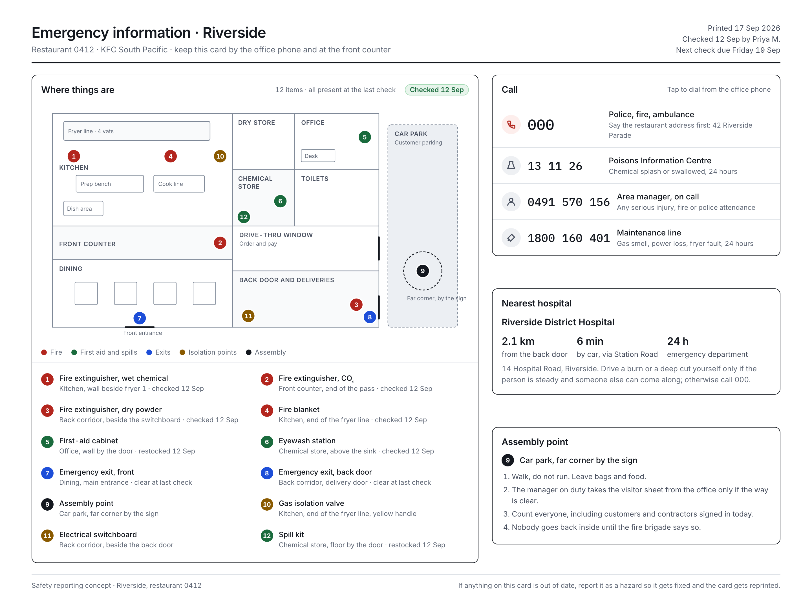
Chemical register: an obligation that expires
Chemicals were outside the study's scope. The principle applied here is the one the research established everywhere else: the system should answer the question the person on shift actually has, in language they already use.
A safety data sheet is a compliance document with an expiry date, so the register leads with what is expiring and what is missing rather than with an alphabetical list of products.
The panel is written for the moment it is needed: what this is, what to wear, what to do if it goes on skin or in eyes, and the three steps for a spill. The regulatory document is attached underneath, not in front.
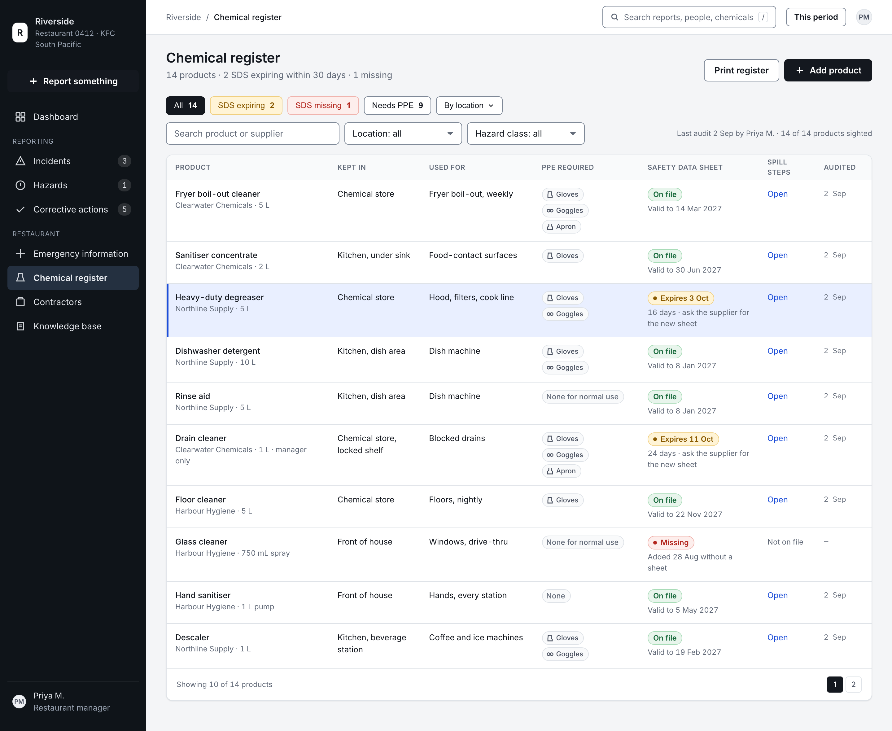
1234567Figure 8The chemical register. Status first, alphabet second, and PPE as a column so a new starter can read the requirement without opening anything.
The page opens with its exceptions, not its total Design decision
DecisionThe sub-line reads 14 products, 2 safety data sheets expiring within 30 days, 1 missing. A register is only interesting where it is wrong, so the two numbers that need work are stated before anything is clicked.
RejectedA compliance percentage. It is one number that hides which product is the problem and reads as a score to be defended.
Checked against Design system: page head with a factual sub-line (p-page-head)
Filters that state the number they will filter to Design decision
DecisionEach chip carries its own count, so the exceptions are visible before the filter is used and the manager can see there is nothing to do without doing anything. The counts are tinted with the same warning and danger tokens the badges use further down the table.
RejectedA plain filter dropdown. It hides the counts behind an interaction and gives the page nothing to say at rest.
Checked against Slite, knowledge management with filter chips
The audit is a fact on the page, with what it covered Design decision
DecisionLast audit 2 Sep by Priya M., 14 of 14 products sighted. Naming the person and the coverage turns an audit from a status into something a reader can check, and it makes a partial audit visible rather than rounding it up to done.
RejectedA green Compliant badge. It says less and it cannot be wrong in a useful way.
Checked against Design system: meta line aligned to the filter row (p-meta)
The protective equipment is in the row, not in the document Design decision
DecisionGloves, goggles and apron appear as labelled chips on every row. It is the one fact somebody needs before they touch the product, and putting it in the table means it is answered without opening anything.
RejectedA hazard pictogram alone. It is the regulated symbol and it does not tell a new starter what to put on.
Checked against Airtable, projects with status pills
An expiry says what to do about it
FindingTeam members said they had never been told the threshold for reporting, so each person sets their own.
DecisionThe research kept finding people left to interpret something nobody had explained to them. So the expiring row does not stop at a date and a colour. It says 16 days, then ask the supplier for the new sheet. The status and the next action sit in the same cell.
RejectedThe expiry date on its own. It is accurate, it is the compliance fact, and it leaves the manager to work out whose job it is.
Checked against Airtable, status pill with a date beneath
Spill steps are a column, because a spill is not a reading task Design decision
DecisionEvery product carries a direct link to its three spill steps. The steps are written in the panel in plain words, and the second one names the spill kit by its marker number on the emergency information plan, so the two modules point at the same physical object.
RejectedBurying the procedure inside the safety data sheet. It is where the law puts it and it is fifteen pages from the part somebody needs.
Checked against Navattic, table row opening a detail panel
A missing sheet says how it got that way Design decision
DecisionThe missing row reads Added 28 Aug without a sheet. Naming the moment the gap was created points at the process that allowed it, which is the fix, rather than at the person holding the register today.
RejectedA red Non-compliant badge. It grades the restaurant and says nothing about how to stop it happening again.
Checked against Design system: danger badge with a supporting line (p-badge p-badge-danger)
The state that matters
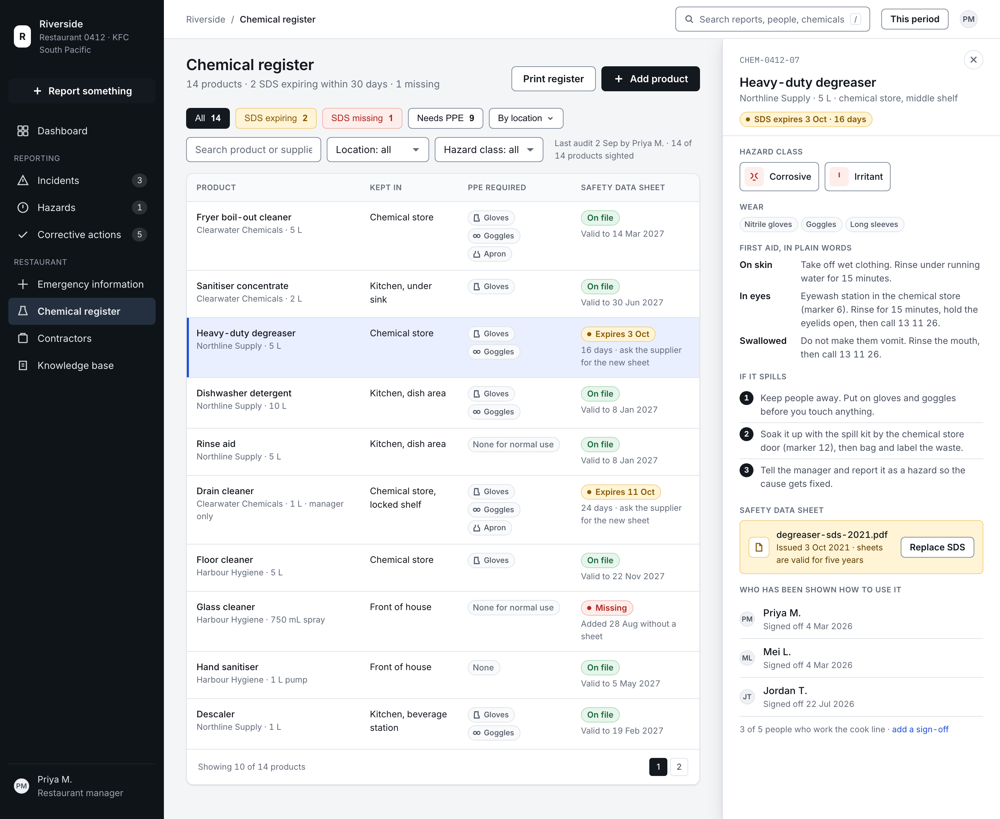
Contractor management: the people the system forgets
Contractors were outside the study's scope. The finding that carries over is that managers work through the system on behalf of everyone else, and that open hazards were held in a record nobody on the floor could see.
Signing a contractor in is where an open hazard becomes useful to someone who has never been in the building: the sign-in reads the restaurant's open hazards and tells them, on the record, before they start.
Induction and insurance are dates that expire, so they are badges with a date on the row rather than a document someone has to open to find out.
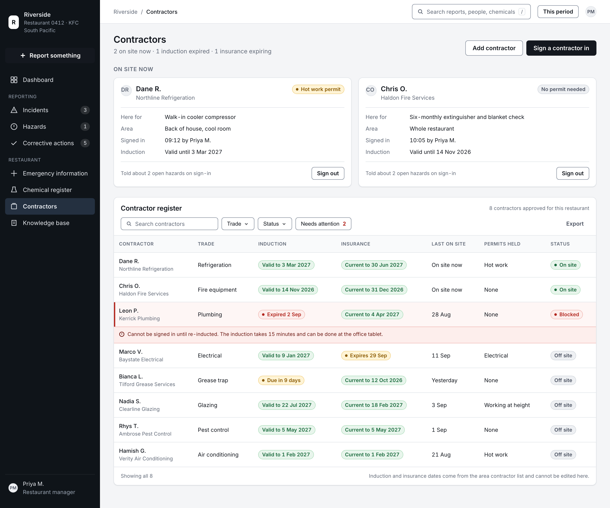
1234567Figure 9Contractors. Who is on site now sits above the register, because that is the question a manager is asked, not who is on the list.
Who is in the building, before the register
FindingDesign decision. The research found that people report to a person rather than to a platform, and that the manager is the one who works the system on the team's behalf.
DecisionThe module opens on the two contractors on site right now, with what they are here for and who signed them in. The register sits underneath it.
RejectedOpening on the full contractor register, which is an administrative list and answers nothing a manager needs during a shift.
Checked against Luma, Guests
The hazard briefing is recorded, not assumed
FindingDesign decision, built on the open hazards the system already holds for this restaurant.
DecisionSign-in fills the hazard list from the restaurant's open hazards and records which ones the contractor was told about, so the card can state it afterwards.
RejectedA single 'site induction given' tick, which records that something was said but never what.
Checked against Deel, Compliance documents
The count is the filter Design decision
DecisionThe two records that will stop work are counted in the page sub-line and offered as one filter chip, so the manager reaches them without reading the table.
RejectedA red dot on the sidebar, which says something is wrong without saying what or where.
Checked against Sweatpals, Check-in
Show the consequence, not the data
FindingDesign decision, taking the lesson from the research that reports were classified after the fact and errors came back from above, which taught people the system was a way to get something wrong.
DecisionAn expired induction marks the row, turns the status to Blocked and removes the sign-in path. The manager is never asked to work out what an expiry date means.
RejectedPrinting the expiry date in a column and leaving the manager to do the arithmetic on a busy shift.
Checked against Deel, Compliance documents
The remedy, with what it costs
FindingDesign decision, following the plain-language principle the research set for the reporting form.
DecisionThe note names the fix, where it happens and how long it takes: 15 minutes at the office tablet.
RejectedA tooltip, which hides the one line that decides whether the job happens today.
Checked against Deel, Compliance documents
Two severities, because two things are true Design decision
DecisionExpiring insurance is amber and does not block the visit. An expired induction is red and does. Colour carries the difference between watch this and stop.
RejectedOne combined compliance status, which would collapse a warning and a blocker into the same word.
Checked against Sweatpals, Check-in
Say where the data comes from
FindingDesign decision, answering the research finding that the platform was configured for one workflow and handed restaurants fields they could not act on.
DecisionThe footer says the dates are owned by the area contractor list and cannot be edited here, so nobody wastes a shift trying.
RejectedAn editable field that silently fails on save, or no explanation at all.
Checked against Deel, Compliance documents
The state that matters
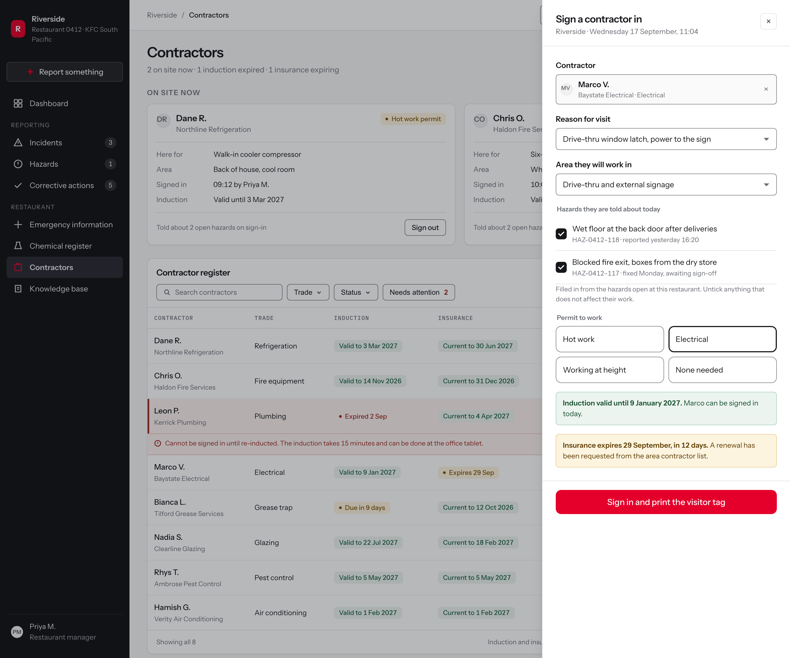
Knowledge base: the threshold question, answered
The barrier was not fear. Team members trusted their managers and nobody described feeling embarrassed to report, even when they had been doing the wrong thing. The barrier was the form, the phone and the threshold: not knowing whether a thing counted. A plain-language guide to what counts was one of the concept mockups delivered in December 2025.
So the knowledge base opens on the question people actually type, and its first article is the one that unblocks reporting: incident or hazard, with examples from a restaurant rather than definitions from a standard.
The answer to not being sure is written into the article and matches the promise the reporting flow makes: report it as whatever it looks like to you, and the manager sorts out the classification from what happened.
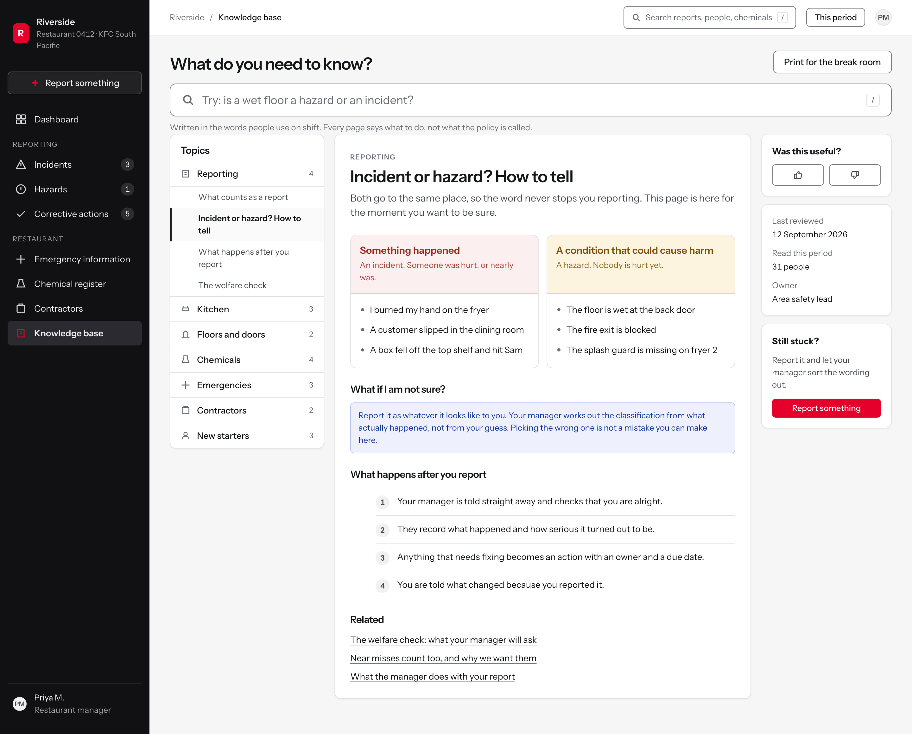
1234567Figure 10The knowledge base. Search first, then the article that resolves the threshold question, with the examples in the words people used in interviews.
Search first, in the words people use
FindingTeam members said they had never been told the threshold, so each person set their own. Survey responses showed awareness that incidents should be reported but no common understanding of what counts.
DecisionThe page opens on one search field whose placeholder is the question people actually ask: is a wet floor a hazard or an incident?
RejectedA grid of category tiles, which asks the reader to already know the word they came here to look up.
Checked against Amazon, Help topics
Topics named after the shift, not the policy
Finding22 of the 40 respondents who answered the question said they had received no formal training on the reporting platform they were expected to use.
DecisionSeven topics in shift language, with the article count beside each and the open topic held open so the reader can see where they are.
RejectedPolicy-document naming and a nested compliance hierarchy, which is how the material was already organised and was not being read.
Checked against Revolut, How can we help
Incident means something already happened
FindingThe hazard form offered options that were clearly incidents, such as an attempted assault, which is an event rather than a condition. Reporters could not tell which form to use.
DecisionOne test, in one sentence: did something happen. Three examples in the reporter's own words, drawn from the kitchen and the dining room.
RejectedReproducing the platform's own taxonomy, which is the thing that caused the confusion.
Checked against Amazon, Help topics
Hazard means nobody is hurt yet
FindingThe same finding: hazard sub-categories contained events rather than conditions, so the two forms could not be told apart from their own labels.
DecisionThe hazard side is defined by its tense. Nobody is hurt yet, and the three examples are all conditions that are true right now.
RejectedListing the hazard sub-categories, which would restate the problem rather than resolve it.
Checked against Amazon, Help topics
Getting it wrong is not a thing you can do
FindingThe form asked the reporter for outcome type and regulator notifiability, two things the research showed reporters cannot know in the moment. Misclassified reports were sent back from above, and people learned that reporting was a way to get something wrong.
DecisionThe page says the manager works out the classification from what actually happened, so the reporter never carries that risk.
RejectedA decision tree, which still ends in a choice the reporter has to get right.
Checked against Intercom, Help Center
What happens next, written down
FindingMinor reports were closed without a word to the reporter, and once a team member had told their manager they had no visibility of whether anything was logged.
DecisionFour steps, ending with being told what changed. The same four steps appear on the confirmation screen after a report is sent.
RejectedLeaving the process undocumented, which is what built the belief that reporting does nothing for anyone else.
Checked against Intercom, Help Center
A page with an owner and a review date
FindingTraining modules were completed without the knowledge being retained, and managers showed the poster at induction with no check afterwards that anyone had understood it.
DecisionReview date, owner and how many people read it this period sit beside the article, so the guide is maintained rather than published once.
RejectedAn undated page with no owner, which is how the existing material aged out of use.
Checked against Intercom, Help Center
The state that matters
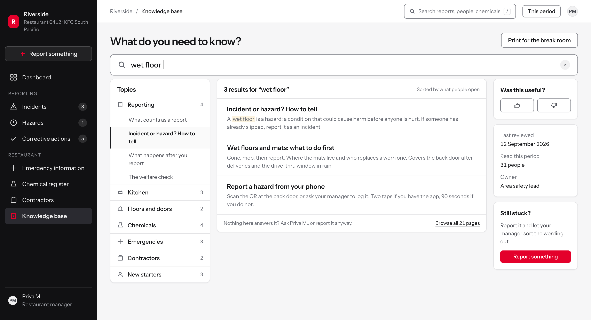
One set of tokens, one set of components, no framework
Every screen here is hand-written HTML on two stylesheets: a token file and a component file. Nothing is generated by a UI kit and nothing is a picture of a component. The tokens below are read out of the live token file when this page is built, so what you see is what the screens use.
The type scale has seven steps from a 14px base. Spacing is a 4px grid. There are three radii and two elevations. Colour is one neutral ramp plus four status pairs, each pair a foreground and a ground; a contrast script checks every text pair at 4.5 to 1 and every border at 3 to 1 before a screen is captured, and the muted ink and the strong line were both darkened after it failed them.
Numbers are set in tabular figures so a column of counts aligns. Status is never carried by colour alone: every badge has a dot and a word. The sidebar is the one dark surface, which keeps the working area white and lets a status colour mean something. Components were lifted into the shared file once a second screen needed them, which is how the drawer, the numbered step list, the comparison pair and the oversized search field arrived.
Surfaces
Ink
Status
Status grounds
Type scale
--p-fs-112pxThe manager classifies from the outcome--p-fs-213pxThe manager classifies from the outcome--p-fs-314pxThe manager classifies from the outcome--p-fs-416pxThe manager classifies from the outcome--p-fs-518pxThe manager classifies from the outcome--p-fs-622pxThe manager classifies from the outcome--p-fs-728pxThe manager classifies from the outcomeWhat was checked against what
Before each component was drawn, one search on Mobbin for the pattern, then two or three references read and reduced to what to take and what to leave. Recording the rejection matters as much as the reference: most of these products are for office workers with a mouse and a mailbox, and this one is for someone standing at a fryer.
Every row links to the screen on Mobbin.
| Pattern | Reference | Taken | Rejected |
|---|---|---|---|
| Incident register (table with filters, status, submitted on, actions) | Employment Hero, My Incidents | Primary action top-left of the table, toggle to show closed reports, status column, per-row actions menu | Sparse single-row demo; no summary strip |
| Follow-ups and actions linked to an incident, at-a-glance severity table | incident.io, Post-incident follow-ups | At-a-glance table above the list; actions grouped under their incident with owner avatars; filter and save-view controls | Engineering severity vocabulary |
| Incident record with status header, timeline and right-hand key facts | incident.io, incident timeline, GitLab, issue timeline, Jira, work item | Status pipeline in the header; left timeline, right facts panel; linked items as a section | Dense engineering chrome; three-level tabs |
| Action tracker (task, assignee, status, due, files) | Vanta, Action tracker | Task table with assignee and due date; mark-as-complete inline; success toast | Risk-scenario column |
| Kanban for open work | Bonsai, Tasks board, Slack, Lists project tracker, Motion, My Tasks kanban | Column headers with counts; card with title, meta row and owner; overdue treatment on the card border | Star priorities; week grouping |
| Dashboard with stat tiles, chart and table | Airtable, Projects dashboard, Jobber, Home workflow strip | Three or four stat tiles with a linked drill-down, two charts side by side, table beneath; a workflow strip that reads left to right (new, in review, awaiting) | Marketing tiles; trial banners |
| Knowledge base | Intercom, Help Center, Amazon, help topics | Search first; a short list of category cards with an article count; topic list on the left with cards on the right for browse | Hero imagery |
| Registers with status and expiry | Slite, Knowledge management, TheyDo, Insights with side panel, Wrike, files to review | Quick-filter stat chips above the table (outdated, expiring, empty); a right-hand detail panel opened from a row; status and due-date columns | Verification workflow |
| Mobile report flow (category list, confirmation) | Clubhouse, Report an issue, Apple Maps, Report an incident, Google Maps, Adding a report | A short list of large tappable categories; a sheet that names the category with an icon; a calm confirmation with what happens next | Emoji celebration; map context |
| Sidebar app shell | Vanta, incident.io | Grouped nav with section labels; a primary create button at the top of the sidebar; workspace switcher at the top; user at the bottom | Trial progress widgets |
| Board columns with counts, a collapsed done column | Linear, Issues board | Column header with a count; the Done column shown but visually quieter; card with an identifier, title and a meta row; hidden columns listed at the edge | Engineering labels and cycles |
| Cards with a red overdue date, priority and due date | ClickUp, Board view | Overdue date shown in red on the card itself; owner avatar and due date on the same meta row | Tag clouds, cover images, priority flags |
| Status-tinted columns with an item count in the header | Slack, Lists kanban | Column header reads "Status · n items"; one primary add button for the whole board | Star-rated priority; column tints (too loud beside the semantic reds and ambers) |
| Board insights panel: work items that need attention, due, stuck | Jira, Board insights | A short "needs attention" notice above the board that names the overdue items | A separate insights panel; kept it to one line |
| Task table with assignee, due date and inline complete | Vanta, Action tracker | The list view: one row per action with owner, due, status and an evidence column | Risk-scenario column |
| A row opens a detail panel on the right while the table stays in place | Navattic, visitors table with detail panel | The selected row keeps a tinted background and a left accent bar, so it is obvious which product the panel belongs to. The panel is a column of labelled sections, not a form | The tabbed Activity and Details split. A product has one story and it should not be filed behind two tabs while somebody is holding a spill kit |
| Status carried as a coloured pill in its own column, with the date underneath | Airtable, projects with status pills and a record panel | One pill per state (on file, expires, missing) with the expiry date as a second line, so the column answers both "is it compliant" and "until when" without a second look | Multi-select tags and per-view colour overrides. The register has three states and they are fixed |
| Typed fields in a side panel, grouped under small caps headings | Dovetail, contacts with a field panel | Short labelled groups (hazard class, wear, first aid, if it spills) instead of a long document. Each group is scannable on its own | The comment thread and the AI summary block. Neither belongs on a page somebody opens in an emergency |
| Quick-filter chips above the table that double as a count | Slite, knowledge management with filter chips | Chips that state the number they will filter to (SDS expiring 2, SDS missing 1), so the exceptions are visible before anything is clicked | Nested folder navigation. A restaurant has one register, not a tree |
| Compliance register with status counts above a filtered table | Deel, Compliance documents | Counts of what needs attention sitting above the table and doubling as filters; one status badge per row; a per-row action so the fix starts from the row | The bulk-message workflow and the payroll columns, which are administration rather than site safety |
| Check-in list with who is here and who is not | Sweatpals, Check-in | Checked-in state as a first-class column, and chip counts that split the list by that state | The dark theme and the per-person visit counter, which answer a question nobody on a shift asks |
| An at-a-glance strip before the full list | Luma, Guests | Naming who is on site right now above the register, with the sign-in action attached to that strip | The capacity and invitation framing |
| Register table with a right-hand detail drawer | Navattic, Visitors | The drawer opening over the table so the manager keeps their place in the list | The deprecation banner and the properties tabs |
| Many locations compared in one table, metrics grouped under a shared header, one row per location | Navan, COVID-19 status by state | Location as the row, metric columns grouped under a labelled header, a per-row action at the right edge, a view switch above the table | Alphabetical sort, which buries the rows that need attention; a download icon on every row |
| Small multiples: one panel per item, same scale on each, a plain-language line under the grid | Xero, business snapshot | A grid of equally sized panels, a dashed line for the comparison series, a stated shared scale, and a sentence that says what the shapes mean | Financial ratio framing; per-panel info icons |
| Sparklines set inside a dense data table so shape and number read together | PlanetScale, query insights | An inline bar in the row so volume is comparable down the column without a second chart | A column-picker menu; latency percentile vocabulary |
| Stat tiles with a linked drill-down above the main table | Airtable, projects dashboard | Four tiles, each with a link into the list it counts, and a one-line breakdown beneath the number | Marketing tiles and trial banners |
| Dashboard with stat tiles, a chart and a table beneath | Airtable, Projects dashboard | Four tiles each with a linked drill-down, a chart and a table below, one card per question | Marketing tiles and trial banners |
| A workflow strip that reads left to right as the day does | Jobber, Home workflow strip | Today's work grouped by what needs a person, with the action on the row | Revenue widgets |
| Action tracker with owner, due date and inline completion | Vanta, Action tracker | A primary create button at the top of the sidebar; grouped navigation with section labels | The risk-scenario column |
| Status and severity as chips on a list of incidents | incident.io, incident list | Status as a chip on every row, counts on the navigation | Engineering severity vocabulary |
| Numbered markers on a plan, paired one-to-one with a numbered list | Tripadvisor, tour itinerary with mapped stops | The marker number is the only link between the drawing and the words, so the legend can carry the detail the plan has no room for. Markers are filled circles with the number reversed out, large enough to read at a glance | The travel styling: photography, ratings and a booking rail. Nothing on an emergency screen competes with the plan |
| Schematic plan of a building with labelled zones and a controls row above it | Zillow, property floor plan | A flat line drawing rather than a photograph or a render. Rooms named in small caps inside their own outline, fittings drawn as plain rectangles, the whole thing readable in one colour | Zoom controls and floor switching. One restaurant is one floor, and a control that can hide half the plan is the wrong idea when somebody is looking for a fire blanket |
| A list beside a map where each row states where the thing is in words | Klook, things to do with mapped pins | Every legend row repeats the location in plain words ("Kitchen, wall beside fryer 1") so the screen still works when it is printed, photocopied and taped inside a cupboard door | Card imagery and prices. The legend rows carry a last-checked date instead, because that is the fact a manager is audited on |
| Report page with a title, a one-line description, then a plain table | Fresha, Sales summary | Title and one-sentence subtitle above the table; right-aligned numeric columns; a totals line | Client and money columns; filters (the notice is a fixed period) |
| Printable document with a bordered page, heading block and a dated "as of" line | Xero, Balance sheet layout | The page as a document: generous margins, a heading block with the organisation and the date, tabular numbers | Nested account hierarchy; the side editor |
| Report with a filtered-by line and a status table | Docusign, Envelope status report | A meta line under the title saying what the report covers and when it was produced | Filter controls on the page |
| Named stage tracker across the top of a record | Employment Hero, reference check lifecycle | A horizontal tracker where every stage is named and carries its own state and owner, so the manager can see what has happened and what is theirs to do next | The lifecycle table underneath that repeats the tracker row for row. One statement of the stages is enough |
| Incident record with a pipeline, a timeline and a facts rail | incident.io, incident record | Stage pipeline in the header; the account of what happened and the activity in the main column; who and where in a right-hand rail | The Slack channel, post-mortem and duration-metrics chrome. A restaurant manager is on the floor, not in a war room |
| Properties rail beside the record body | Linear, issue with properties panel | One line per fact in the rail, labels left and values right, so the facts can be scanned without reading the body | The keyboard-first density. Every control here has to work with a thumb on a phone in a kitchen |
| Linked work as its own section | Jira, work item with linked items | Corrective actions shown on the record as linked items with owner, due date and state, so the report and the fix stay joined up | Three levels of tabs, and the activity feed split across Comments, History and Work log |
| Timeline of what happened to the record | Twenty, record timeline | A plain chronological list, newest work last, each entry naming the person | Field-by-field change logging, which buries the two events a manager cares about |
| Help library with search first and a category rail | Amazon, Help topics | A search field above everything with a placeholder phrased as a real question; a left topic rail with the current topic held open; the content column on the right | The two-column card grid, which buries the article a reader came for |
| Help centre with article counts and an owner byline | Intercom, Help Center | An article count against each topic, and a byline that says who keeps the page current | The illustrated hero band, which costs a screen of height and says nothing |
| Plain icon-led topic list, one per row | Revolut, How can we help | One topic per row with a small icon and no imagery, so the list scans in a second | Mobile-only scale and the back-arrow chrome |
| Mobile report flow: a short list of large tappable categories, then a calm confirmation | Clubhouse, Report an issue | Large tap targets written as sentences; one action pinned to the bottom; a confirmation that says what happens next | The emoji celebration on submit |
| Reporting something about a place, with the location already known | Apple Maps, Report an incident | The context the app already holds is never asked for; the sheet names the category with its icon | Map context, which a restaurant does not need |
| Condition against event, as two separate entries | Google Maps, Adding a report | Separate paths for two things people confuse, each with its own short question set | Community moderation framing |
| The status of the person's own last request, carried on the home screen | Hers, home with a request in review | A single outcome card above the routine action, in plain words, with a tick rather than a progress bar | The promotional stack beneath it |
| Worked examples where the hesitation is, rather than a help link | Intercom, Help Center | Examples in the reader's own language, on the deciding screen | Hero imagery and a search-first layout, which belongs in the knowledge base |
| Quick filters above a report list | incident.io, Incidents with status filter | A row of named quick filters sitting above the list, each carrying its own count, so the manager can see how much work each state holds before clicking; the primary action stays top right | The engineering severity vocabulary (Major, Fixing, Monitoring). A restaurant list is sorted by what needs a person today, not by an engineering severity ladder |
| Row selection and bulk actions | incident.io, incident list with bulk actions | Row checkboxes and a select-all control in the header, so a manager can act on several closed reports at once | Bulk "Set severity". Severity is set once, from the outcome, after the welfare check. Making it a bulk action would put the classification back in the wrong hands |
| Filter chips that read as key and value | Klaviyo, Helpdesk all tickets | Filter chips written as "Type All", "Status Open", "Area All" so the current filter is readable without opening anything; a saved view named in the bar | Sentiment and channel columns, and the upgrade banner |
| A row that opens a side panel | Navattic, visitors table with detail drawer | Selecting a row opens a right-hand panel and keeps the list in view, so the manager keeps their place in the queue | The deprecated-view notice and the properties accordion |
| Register with an expiry or due column | TheyDo, insights list with side panel | A trailing column that states what is owed and when, rather than a generic "updated" timestamp | The scoring column |